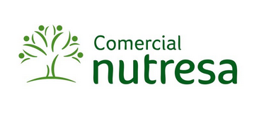

Marcas beneficiadas
Marcas beneficiadas por los productos desarrolladas por el equipo de Alianza CAOBA.



Parte activa del ecosistema de Ciencia Tecnología e Innovación de Colombia, aporta al crecimiento del país a través de la formación de talento humano altamente calificado y el desarrollo de proyectos de investigación que apoyan la transformación digital de las empresas Nacionales. En esta sección usted podrá encontrar más detalle sobre los resultados de Alianza CAOBA para la empresa ancla Grupo Nutresa. Resultados tales como GIFS de los proyectos realizados hasta la fecha y producción intelectual. Así como fotografías y testimonios del equipo de profesionales que han desarrollado las iniciativas.
Marcas beneficiadas por los productos desarrolladas por el equipo de Alianza CAOBA.
Trabajos seleccionados desarrollados por Alianza CAOBA para Grupo Nutresa.
Modelo de analitica que, usando datos de la red social Twitter, permite identificar rasgos demográficos, psicológicos y comportamentales de los consumidores en Colombia tales como: gustos y preferencias diferenciados por las distribuciones geográficas, hábitos, estilos de vida, valores y necesidades de la población.
Proyecto desarrollado entre la Pontificia Universidad Javeriana y Servicios Nutresa
Participantes: 4 profesores(PhD), 8 estudiantes de maestría, 3 estudiantes doctorales y 3 profesionales de Nutresa
Involucrados 3 grupos de investigación
Modelo para analizar los tipos de Canasta para los productos del portafolio “seco” de Nutresa, con el fin apoyar la toma de decisiones en la organización que generen mayor valor para el negocio.
Proyecto desarrollado entre la Universidad ICESI y Servicios Nutresa
Participantes: 3 profesores(PhD), 5 estudiantes de maestría, 1 estudiante doctoral y 2 profesionales de Nutresa
Involucrado 1 grupo de investigación
Técnicas de analítica avanzada para desplegar y consolidar fuentes dispersas de información de terceros relacionadas con las marcas Zenú, Tosh y Pastas Doria, con el fin de brindar información para apoyar las tomas de decisión de las marcas de la empresa.
Proyecto desarrollado entre la Universidad EAFIT, Universidad de los Andes y Servicios Nutresa
Participantes: 3 profesores(PhD), 4 estudiantes de maestría, 1 estudiante doctoral y 3 profesionales de Nutresa
Involucrados 2 grupos de investigación

Centro Activo de Monitoreo de Marca (Active Brand Command Center) para la integración de diversas fuentes y técnicas de modelos de analítica y visualización para la toma de decisiones a partir de información relacionada con el histórico de ventas, distribución geográfica de puntos de ventas, opiniones de usuarios en redes sociales, entre otros.
Proyecto desarrollado entre la Pontificia Universidad Javeriana, Servicios Nutresa y Alimentos al Consumidor
Participantes: 2 profesores(PhD), 3 estudiantes de maestría, 1 estudiante doctoral y 3 profesionales de Nutresa
Involucrados 1 grupo de investigación
Herramienta de aplicación de técnicas analíticas para la aplicación de algoritmos de procesamiento de lenguaje natural con el propósito de generar mejores clasificaciones en tipos de caso y aplicar análisis de sentimientos para la priorización de casos de atención al cliente.
Proyecto desarrollado entre la Pontificia Universidad Javeriana, Servicios Nutresa y Comercial Nutresa
Participantes: 1 profesor(PhD), 2 estudiantes doctorales y 3 profesionales de Nutresa
Involucrados 1 grupo de investigación
Procesos para la identificación de transacciones que estén posiblemente relacionadas con eventos de lavado de activo y financiación de terrorismo mediante la aplicación de técnicas para la identificación de anomalías y eventos inusuales.
Proyecto desarrollado entre la Universidad de los Andes y Servicios Nutresa
Participantes: 1 profesor(PhD), 3 estudiantes de maestría, 1 estudiante doctoral y 3 profesionales de Nutresa
Involucrados 1 grupo de investigación

Modelo para la caracterización y la formulación de pronósticos de incidentes laborales del personal profesional de Grupo Nutresa.
Proyecto desarrollado entre la Universidad EAFIT, Pontificia Universidad Javeriana y Servicios Nutresa
Participantes: 1 profesor(PhD), 2 estudiantes de maestría, 1 estudiante doctoral y 3 profesionales de Nutresa
Involucrados 2 grupos de investigación
Planeación, diseño y desarrollo del material teórico/práctico para caso de estudio de medición del nivel de satisfacción del cliente utilizando análisis de texto.
Participantes de proyectos de parte del equipo de Grupo Nutresa y Alianza CAOBA.
Presidente Servicios Nutresa
Ex presidente Junta Directiva de Alianza CAOBA (2017-2019)
Gerente de Inteligencia de Mercados
Presidente Junta Directiva de Alianza CAOBA 2020

Director Corporativo Inteligencia de Mercados
Representante Comité Técnico de Alianza
Jefe de Analítica
Consultor de Analítica
Consultor de Analítica
Consultor de Analítica

El trabajo con CAOBA y las universidades ha sido muy valioso en conocimiento de nuevas tecnologías y metodologías que se llevan a cabo desde la academia, lo que le da un plus adicional a los proyectos en pro de la generación de valor.
El trabajo con equipo experto de las universidades es un aporte diferente al que se tiene normalmente con proveedores y es un hecho que genera valor a los proyectos.
Con CAOBA entendimos nuevas formas de hacer las cosas, adquirimos conocimiento directamente de la academia.
Con CAOBA hemos aprendido formas diferentes de estructurar los proyectos, donde la academia juega un papel muy importante y da una visual muy enriquecedora a las soluciones.
Artículos científicos avalados por pares desarrollados en el contexto de los proyectos de Alianza CAOBA.
| Universidad | Conferencia | Artículo | Ciudad / Fecha | Link de publicación | Autores |
|---|---|---|---|---|---|
| Pontificia Universidad Javeriana | Congreso ICEIS 2017 | “CSL: A Combined Spanish Lexicon Resource for Polarity Classification and Sentiment Analysis”. | Porto, Portugal, los días 26, 27, 28, y 29 de abril de 2017 | Más información | Gabriel Moreno, Alexandra Pomares, Juan Carlos Garcia, Jorge Alvarado |
| Pontificia Universidad Javeriana | The 2017 American Control Conference | “Anomalous Node Detection in Networks with Communities of Different Size” | Seattle, WA, Estados Unidos los días 24, 25 y 26 de mayo de 2017 | Más información | Vargas-Cruz, J., Pomares-Quimbaya, A., Alvarado-Valencia, J., Quintero-Cadavid, J., & Palacio-Correa, J. |
| Pontificia Universidad Javeriana | XXXIII Congreso Internacional De La Sociedad Española Para El Procesamiento Del Lenguaje Natural | “Desarrollo de un Sistema de Segmentación y Perfilamiento Digital”\n | Murcia, España, los días 19, 20, 21 y 22 de septiembre de 2017 | Más información | Vargas-Cruz, J., Pomares-Quimbaya, A., Alvarado-Valencia, J., Quintero-Cadavid, J., & Palacio-Correa, J. |
| Pontificia Universidad Javeriana | XXXIII Congreso Internacional De La Sociedad Española Para El Procesamiento Del Lenguaje Natural | “Automatic constructor of domain models without pre-existing corpus” | Murcia, España, los días 19, 20, 21 y 22 de septiembre de 2017 | Más información | Vargas-Cruz, J., Pomares-Quimbaya, A., Alvarado-Valencia, J., Quintero-Cadavid, J., & Palacio-Correa, J |
| Universidad EAFIT | Thirteenth International Conference On Knowledge Management In Organisations (KMO 2018) | “Towards an improved ASUM-DM process methodology for cross-disciplinary multi-organization Big Data & Analytics projects” | Žilina, Slovakia, 2018 | Más información | Angée, S., Lozano-Argel, S. I., Montoya-Munera, E. N., Ospina-Arango, J. -., & Tabares-Betancur, M. S. |
| Pontificia Universidad Javeriana | The International IFIP Cross Domain Conference for Machine Learning & Knowledge Extraction CD-MAKE | “Spanish Twitter Data Used As A Source Of Information About Consumer Food Choice” | Hamburg, Alemania, los días 27, 28, 29 y 30 de agosto de 2018 | Más información | Moreno-Sandoval L.G., Sánchez-Barriga C., Buitrago K.E., Pomares-Quimbaya A., Garcia J.C. |
| Pontificia Universidad Javeriana | ICEIS 2018 - Proceedings of the 20th International Conference on Enterprise Information Systems | "Age classification from Spanish tweets the variable age analyzed by using linear classifiers" | 21-24 de Marzo, Funchal, Madeira; Portugal | Más información | Moreno-Sandoval, L. G., Mendoza-Molina, J. F., Puertas, E. A., Duque-Marín, A., Pomares-Quimbaya, A., & Alvarado-Valencia, J. A. |
| Pontificia Universidad Javeriana | 13th Colombian Conference on Computing, CCC 2018 | "An automatic approach to generate corpus in Spanish" | 26 - 28 Septiembre 2018, Cartagena, Colombia | Más información | Puertas E., Alvarado-Valencia J.A., Moreno-Sandoval L.G., Pomares-Quimbaya A |
| Pontificia Universidad Javeriana | conferencia ICEIS XXI International Conference on Enterprise information Systems | 'Anonylitics: From a Small Data to a Big Data Anonymization System for Analytical Projects'' | GRECIA 2018 | Más información | Sierra, Alejandro & Pomares Quimbaya, Alexandra & Mendoza, Jaime & Malaver-Moreno, Julián & Carvajal, Hernán & Moncayo, Victor |
Licenciamientos de productos creados en el desarrollo de proyectos de Alianza CAOBA.
| Proyecto | Ancla Participante | Nombre de licencia | Licenciatario |
|---|---|---|---|
| Textolítica | Bancolombia | Textolitica Orchestrator | Nutresa |
| Textolítica | Bancolombia | Text Processing | Nutresa |
| Textolítica | Bancolombia | Sentiment Analysis | Nutresa |
| Textolítica | Bancolombia | CAOBA Tags | Nutresa |
| Anonilytics | Bancolombia | Simple Anonimization | Nutresa |
| Anonilytics | Bancolombia | CAOBA Encryption | Nutresa |
| Anonilytics | Bancolombia | Distributed Anonimization | Nutresa |
| Segmentación Digital | Nutresa | Data Access Object | Bancolombia |
| Segmentación Digital | Nutresa | Word Frequency Analysis | Bancolombia |
| Segmentación Digital | Nutresa | Conversation Logic | Bancolombia |
| Segmentación Digital | Nutresa | Variable Derivation | Bancolombia |
| Segmentación Digital | Nutresa | User Logic | Bancolombia |
| Segmentación Digital | Nutresa | Twitter Streaming Extraction | Bancolombia |
| Segmentación Digital | Nutresa | Statistical Analysis | Bancolombia |